かならずお読みください→
ゲームパッドで作るパソコン入力装置
普通パソコンを操作するにはキーボードやマウスを使います．キーボードやマウスは人間とコンピュータをつなぐ役割をしています．
コミュニケーションエイドをお使いになる方は，それぞれにお身体が不自由ですのでお身体にあわせたスイッチを使います．レッツチャットではスイッチのプラグを差し込み口に取り付ければ，そのスイッチでレッツチャットを操作できます．そのほかにパソコンで動いているコミュニケーションエイドソフトもあります．日立の伝の心，NECのオペレートナビ，ハーティーラダーなどがこれに相当します．これらのソフトを使うにはスイッチをパソコンとつなぐために特殊な装置を使います．伝の心では，テクノツール社の『なんでもスイッチUSB』をオペレートナビでは，同じくテクノツール社の『オペレートナビ用スイッチコネクターUSB』を使います．また，スイッチでマウスカーソルを動かす目的で作られた汎用性の高い『できマウス。』という商品もあります．
経済的に問題ないのであればこれらの商品を手配するのがよろしいと思います．
しかし，お身体の問題を抱える方の多くは経済的にもお困りになることが多く見受けられます．また施設などでは限られた予算内であれこれ活動したいこともあるでしょう．そこで，製品としての完成度にはいくらか目をつむり，もっとお金をかけず手間をかけて目的を実現する方法についてご紹介いたします．また，しゃべる文字盤シリーズを外部スイッチで操作する際にもこの方法がつかえます．
ご注意 ： ここでご紹介する内容は，ものづくりに慣れた方にとっては特に困難を伴うものではありません．しかし誰でもうまくいくといったものではないことをまずご理解下さい．努力して取り組んでも，不本意な結果しか得られないことがあります．
ゲームパッドの改造
材料
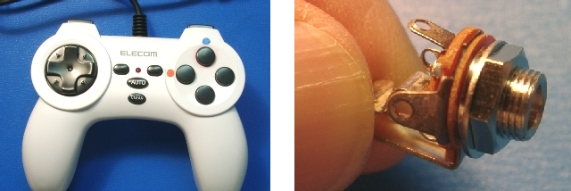
左：ゲームパッド（エレコムJC-2410TWH） 右：3.5ｍｍモノラルミニジャック
その他，細めの電線 １５cmほど
使用する工具 ハンダごて ハンダ など ニッパー ラジオペンチ ねじ回し ドリル などゲームパッドは家電量販店でも購入できます．パソコン用であれば特に機種を問いません．3.5mmモノラルミニジャックは電気電子部品店（富山では，無線パーツ根塚店）で購入できます．また通信販売でも入手できます．（LINKをご覧下さい）
作業
ゲームパッドの１番ボタン（上の写真で赤丸印）を外部スイッチで操作できるように改造します．
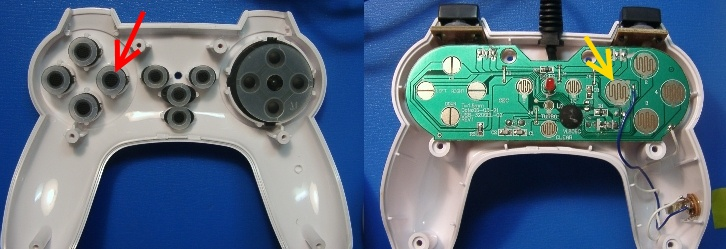
まず，ゲームパッドを分解します．上の写真より，このゲームパッドは押しボタン１で導電ゴム（赤矢印）を基板（黄色矢印）に押しつけて導通する仕組みとわかります．よってこの回路部分に外部のスイッチにつなげることになります．
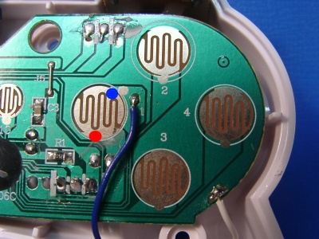
上は黄色矢印部分を拡大した写真です．一番ボタンを押すと青丸部分と赤丸部分が短絡されます．まず基板のどこから配線を取り出すか決めます．ゲームパッドの機能を温存するためボタンの動きをじゃましないようにまたハンダつけ作業のやりやすさにも気をつけます．青丸部分は，近くのやや広い部分に，赤丸部分は写真右下の基板の端にしました．赤丸部分と写真右下の白い導線の部分はつながっていることを写真で確認してください．
基板には保護のための皮膜があります．写真では全体に緑色に見えるのが保護皮膜です．これをとらないとハンダ付けできませのでカッターナイフの先端などとがった部分で軽くこすって削り取ります．米粒程度の大きさで十分です．この部分に導線をハンダづけします．このような基板へのハンダ付けは手早く行い，加熱しすぎて他の部品をこわさないように気をつけましょう．
次に，モノラルミニジャックを取り付ける場所を決めます．今回はゲームパッドの右手グリップの部分に空間がありますので，ここにつけることにしました．まずミニジャックの取り付けのため６ｍｍの穴をあけます．材質がプラスチックですので熱した（釘など）金属棒でも穴をあけることができます．その場合は後でナイフなどで穴の形を整えます．このようにミニジャックを取り付ける空間がない場合には，ケースの隙間から配線を外に出してミニジャックにつなぐとよいでしょう．この場合は断線などに気をつけ，扱いにも注意が必要です．ミニジャックの取り付けができたら，導線をハンダ付けします．配線のとりまわしにはボタンの動きを妨げず接点の間に挟まらないように気をつけましょう．あとは元通りに組み立てます．
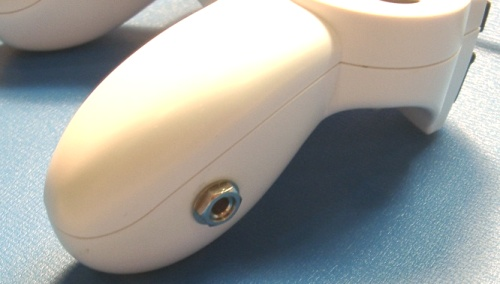
動作確認
まず，ゲームパッドをパソコンのUSB端子に接続します．しばらくすると自動的に使用可能になります．そこで，コントロールパネルのゲームコントローラを開きます．インストール済みゲームコントローラにUSBGamepadと表示され，状態がOKになっているのを確認し，プロパティのテストタブを開きます．
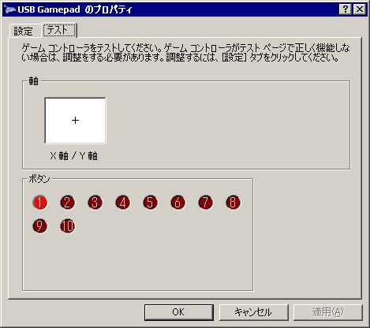
ここでゲームパッドの動作を確認できます．ゲームパッドのボタンを押すと，表示が現れます．（上の写真では１番ボタンを押して①を赤くしている）全てのボタンが正常であることを確認してください．また，改造して追加したミニジャックにスイッチをつないでこれも正常に動作することを確認して下さい．
ゲームパッドキー割り当てソフトのインストール
ここまでの作業でゲームパッドのボタン信号はパソコンに届くようになりました．次はこれをキーボードやマウスの動作に割り当てるソフトウエアを使い，ゲームパッドのボタンを押したら，特定のキーが押されたように設定します．この種のソフトはごく安価で，無料で入手できることもあります．例えば『ゲームパッドキー割り当て』で検索するとたくさん見つかります．Vectorの『ユーティリティー』，『操作関係』の分野でもたくさん紹介されています．この中のどれを使ってもよいのですが，この分野で有名な JoyＴｏKey の設定例を以下に説明します．JoyＴｏKeyについてさらに詳しくお知りになりたい方は，ＪＴＫ software のページ（こちら）をご覧下さい．ダウンロードサイトへのリンクもあります．
ダウンロードしたJoyToKeyを解凍し得られる JoyToKey.exe 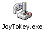をダブルクリックで起動します．
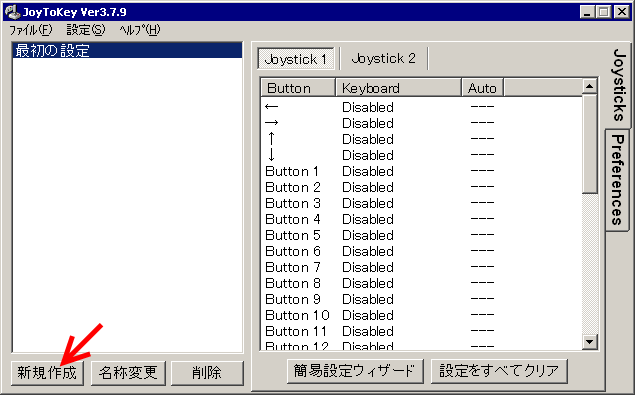
上の表示で，新規作成をクリックします．
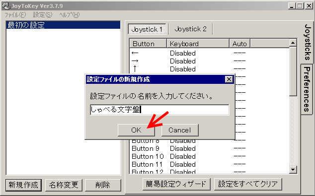
設定ファイルの名前を今回は『しゃべる文字盤』として，OKをクリックします．
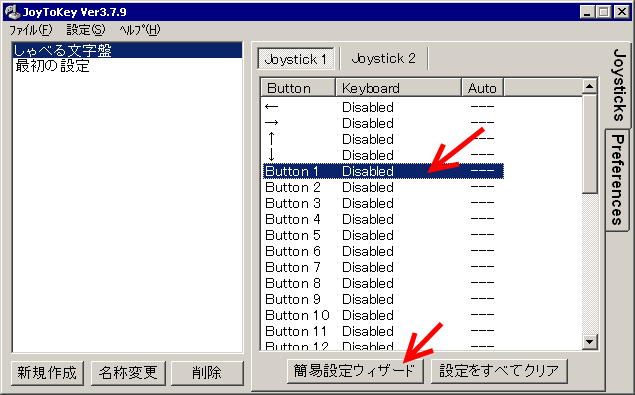
左上にしゃべる文字盤の項目が追加されました．次に Button1 をクリックし，簡易設定ウィザードをクリックします．
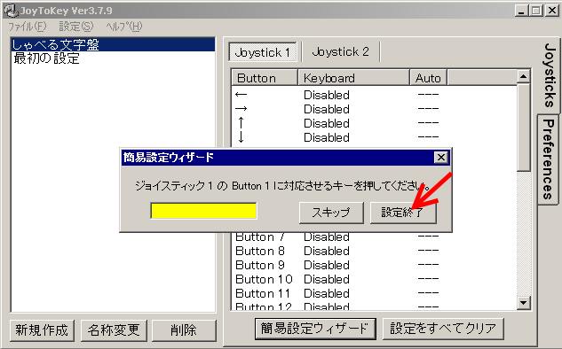
ここで，ボタン１に割り振るキーを押します．しゃべる文字盤ではＦ９キーを使いますので，キーボードのＦ９キーを押します．その後，設定終了をクリックします．
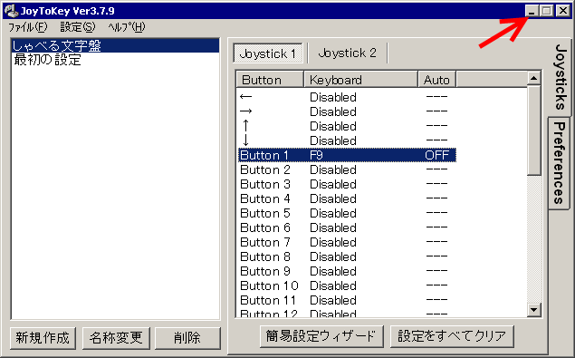
ゲームパッドのボタン１にＦ９が割り振られたとの表示を確認し，右上の最小化ボタンをクリックするとタスクバーに下図のように表示されます．
以上で，ゲームパッドの１番スイッチを押しても，ゲームパッドに取り付けたスイッチ（ジェリービーンスイッチやＰＰＳスイッチなど）を押して，キーボードのF9キーが押されたのと同じ動作をします．このようにしてしゃべる文字盤が外部のスイッチで操作できるようになります．
しゃべる文字盤を使う前にJoytokeyを起動すると外部スイッチを使いしゃべる文字盤を操作できます．
Joytokeyはシェアウエアソフトです．試しに使う場合には無料です．詳しくは作者のページをご覧下さい．
類似のフリーソフトとして，JoyAdapter, NanJoy, ゲームパッドで操作，など数え切れないほどたくさんのソフトがあります．
１５分くらいでおわる工作の説明文を書くために，何倍も時間がかかってしまいました．
今回説明した工作は，１～３万円相当の商品と同等のことを１０００円程度で実現します．この意味ではかなり価値を生み出す工作です．このような工作ができる人は修理もできるかもしれません．故障で困った場合にも，機器のやりくりが苦しいときも解決できるかもしれません．福祉機器でお困りの方々の力になれるかもしれません．今このような仕事ができる人が足りません．
今回の工作のためにゲームパッドを買いに近所の家電量販店に行きました．すると呆れかえるほど多種多様なゲームパッドがごく安価に並んでいました．またゲームパッドキー割り当てソフトもこれまた呆れるほど多種多様にしかも安価（多くは無料）にネットから入手できました．パソコンにおけるゲームの存在感を改めて実感しました．これこそ現代社会における社会インフラのひとつで，めったなことでなくならないと思われます．
昨年（２０１０年）の春に，レッツチャットというコミュニケーションエイドを開発した株式会社ファンコムの解散が発表されました．在庫限りで生産中止との知らせに，ユーザをはじめ支援者の間に驚きと不安が広がりました．その後グループ会社での開発と生産継続の方針が発表され，この問題はひとまず落ち着きを取りもどしました．しかしこの出来事を通じて，コミュニケーションエイドをはじめとする福祉機器の不安定な供給状態が改めて明らかになりました．
コミュニケーションエイドは患者さんやご家族の毎日の生活に欠かせない道具です．故障したらすばやく修理し，その間は代替機が必要です．生産中止などもってのほかとお考えの方がほとんどです．このような道具がごく少数の会社や個人の努力で維持されているのが現状です．もちろん政策的支援も大いに議論されるべきでしょうが，その一方で身の回りのありふれたものから，なくなっては困るものを作りだし安定的に供給する方策を考え普及させていくことも大切だと思います．そしてその担い手を増やしていくことも大切と思います．
2011/03/02 公開研究企画課リハ工学科にもどる